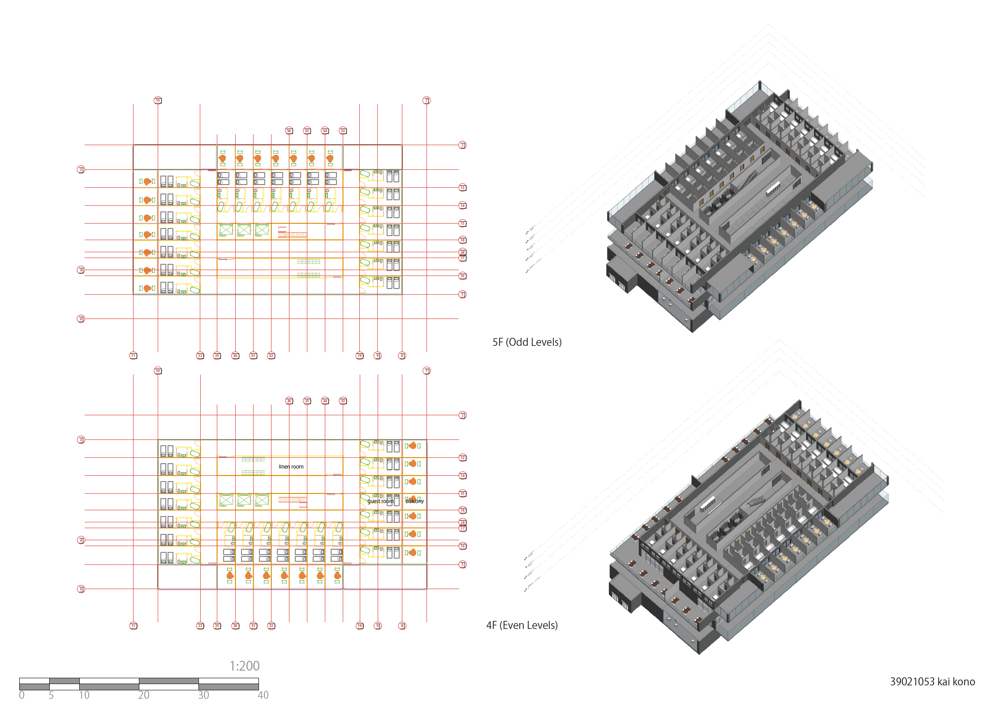
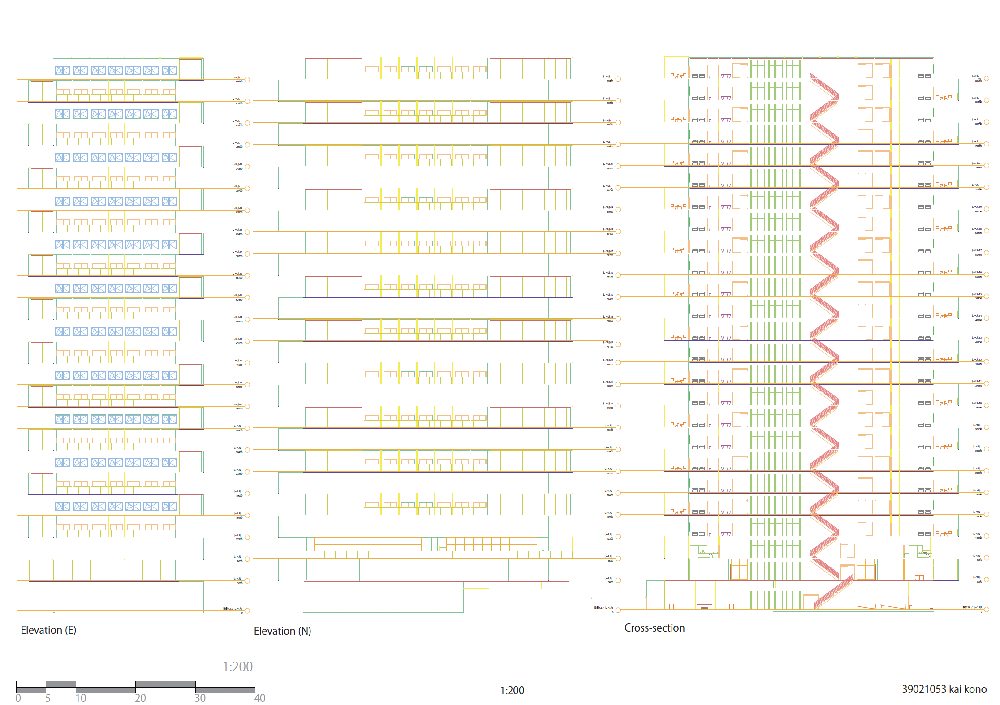
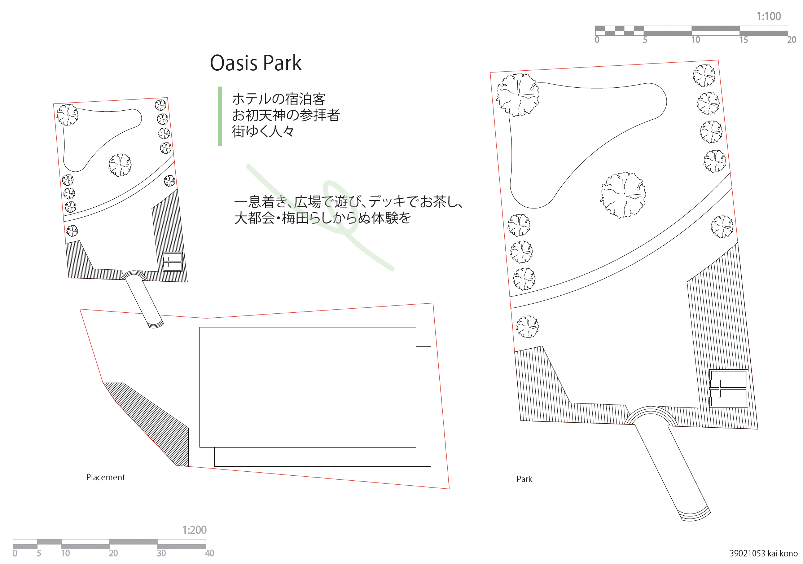
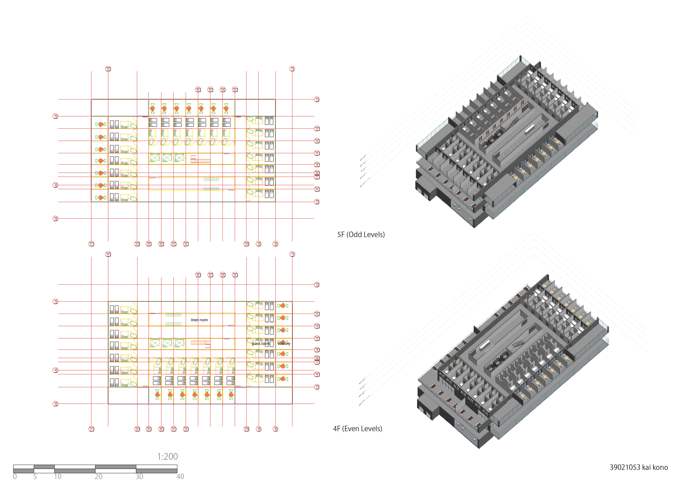
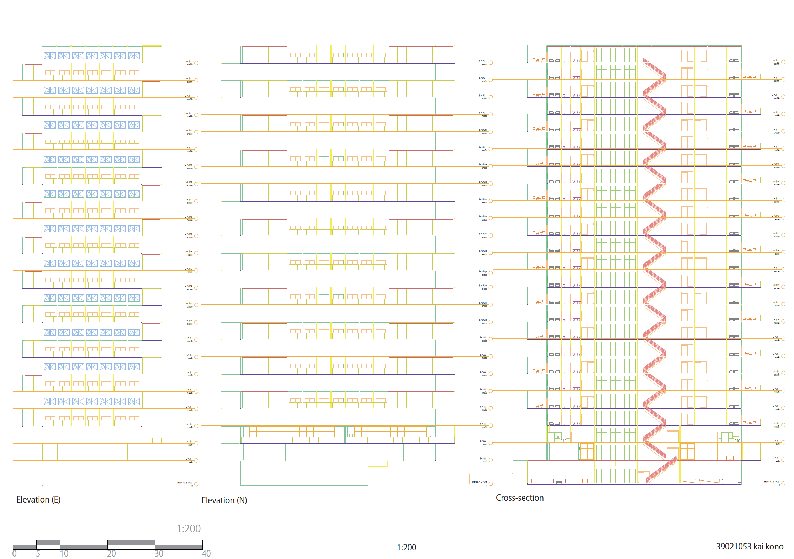
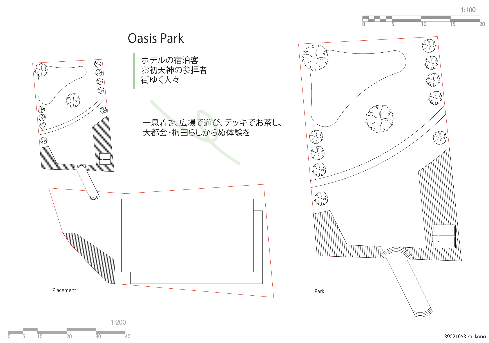
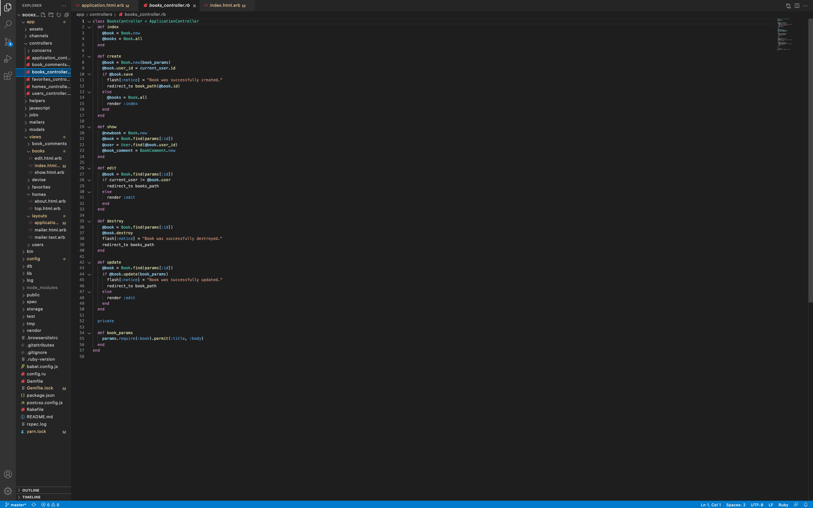
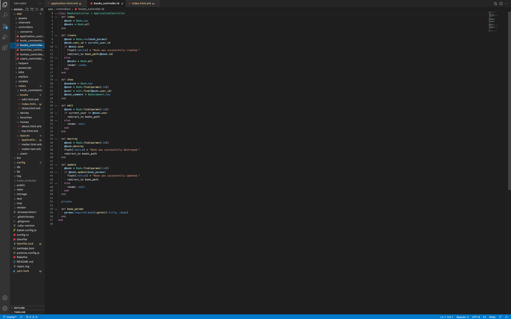

I am
▼
EN
/JP
2003年に東京で生まれ、7歳から13歳の間アメリカのカリフォルニア州にて育ち、帰国後に東京学芸大学附属国際中等教育学校に編入。大学は新たな環境を体験するために兵庫の関西学院大学に入学し、建築学を専攻。趣味はPCゲームとドライブ。
Table of Contents
- Studies
- Projects
- Self-Analysis
Studies
大学3年 建築設計演習IV
大阪駅付近にある、お初天神の周りのビルを撤去し、新たな複合施設を設計する課題。オフィスと同等の収益を見込むための収容率と、観光客に向けた高層ホテルを設計した。また、お初天神にはない庭園を模した公園も設計。

 





株式会社インフラトップ インターンアプリケーション制作
(コードは こちら)


 


Projects
Self-Analysis
大学にて建築学を専攻して学んだことは、UI・UXデザインにおいても活用できると考えています。建築設計を勉強してきた者として、建物は誰のために建てるのか、どのような営みが想定されるのか、などの顧客志向の考え方は培われていると考えます。私は個人的に視覚的なデザインはあまり得意ではなかったものの、設計する土地にはどのような用途の建物があるべきか、自分が使うとしたらどのような機能を期待するか、などのUXの観点からの考え方は得意だと自認しています。また、3DモデリングツールやCADソフトウェアに加え、プレゼンボード作成時にはIllustratorやPhotoShopなどのツールの使い方も熟知しています。こういった専門的な知識や、建築学で培ったものづくりに対する考え方を応用することで、使っていて心地の良いプロダクトやサービスの制作を目指したいと考えています。
私の最大の強みは、新たな環境やツール、コミュニティなどに素早く、効率的に適応できる能力だと考えます。今まで体験した数多くの経験の中から、共通点を見つけることで素早く新たな環境に活かすことができます。私は元々PCゲームが趣味であるため、PC関連の機器やソフトウェアの使い方は独学で学んできました。中学1年生の時に、友人に誘われプログラミングスクールに通っていた経験もあり、現在でもエンジニアへの転職を志望している方のRubyの学習をメンターとして補助する長期インターンに参加しています。インターンを始める前はRubyに触れたことがなかったにも関わらず、1ヶ月という研修期間を経てメンターとしての業務を開始することができました。元より学習していたHTMLやCSS、javascriptなどの知識を駆使したことで新たな言語の学習へとつながったと考えています。他にも、大学の建築設計演習のためにCADソフトウェアに加え、Revitという新たなモデリングソフトウェアの使い方を習得したことも挙げられます。弊学の建築学部は私の代が１期生となっているため、新たな環境でのチャレンジは自分にとって有意義なものであったと考えています。
一方、私は人に頼らずに一人で解決しようとしてしまう節があります。今までは挫折もなく大学高学年になってしまったが、大学に入り、建築設計課題にて自分の力にのみ頼れる状況に初めて置かれ、何度も挫折を繰り返してきました。大学入学時に親元を離れて新たな環境で一人暮らしをし、建築学という過酷な分野を専攻するという貴重な体験をしたことで、家族や友人、同僚などの力にどれほど自分が頼っていたかに気付かされました。建築設計は孤独で辛いと感じていた時も同じ体験をしている友人や仲間がいたことで頑張れました。また、建築学部の１期生として入学したため、先輩や前例のない環境にて友人と力を合わせて学を続けてきました。一人暮らしをして建築学を学ぶということは、東京を離れてまで入学した関西学院大学で過ごした時間で得た、私にとって最も成長をもたらしてくれた体験であると考えています。
私は御社にとって即戦力となり得る人材であると考えます。新たな環境・チームに素早く馴染み、一人暮らしや大学生活を経て学んだ人との関わり方を駆使して、喜ばれるプロダクト・サービスを共に作り上げるための大きな戦力になれる自信があります。